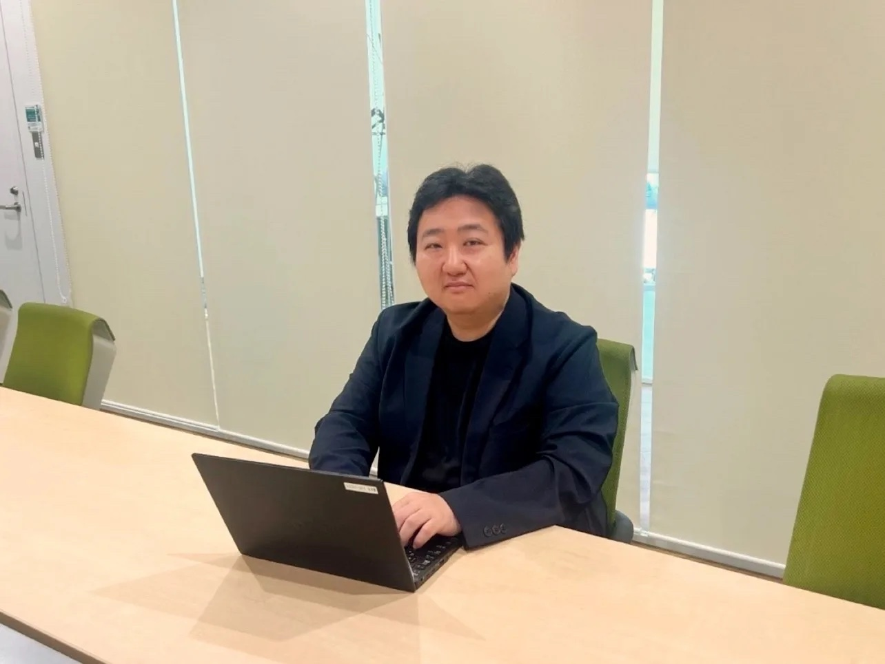

PROGRAM
当日のプログラム
-
11:00 - 11:05
オープニング
-
11:05 - 11:20
第1部：サービスのご紹介
「出張業務工数85%削減」を実現する、承認と購買を統合する次世代ワークフロー 1Approval 構想（株式会社エイチ 伏見）
出張管理システムとは？「ピカパカ出張DX」で変わる出張業務（株式会社ピカパカ 綿引氏） -
11:20 - 11:50
第2部：ユーザー事例対談
実録：手配時間を1.5時間から15分へ。ユーグレナが断行した「1Approval」活用の全貌
-
11:50 - 12:00
質疑応答（Q&A）
PART 1
承認したら購買まで完了。「1Approval」とは
出張のたびに発生する事前承認・手配・経費精算。多い会社では1回の出張手続きに210分、少ない会社でも90分ほどが費やされています。たった1泊の出張でも、間接工数はおよそ9,000円分にのぼります。
原因のひとつが、承認ワークフロー・予約サイト・経費精算・会計がそれぞれ独立した「ツギハギ連携」です。たとえば、予約サイトで価格を調べて申請しても、承認が下りるまでの2〜3日でダイナミックプライシングにより航空券やホテルの価格が上がってしまう。上長は否認せざるを得ず、再申請や日程変更が発生します。出張後も領収書を集めて入力し直し、経理担当者が目視で照合する作業が続きます。
1Approval の仕組み
1Approval は、ワークフロー（申請・承認）と各種購買サービスをつなぐ「中間統合ミドルウェア」です。kintone や Microsoft 365 / Teams など、普段お使いの基盤のまま、承認と同時に外部サービスでの手配・購買までが完了します。
当日は kintone 版のデモをご紹介しました。Microsoft 365（Teams）版はリリース済み、Google Workspace 版も順次展開予定です。出張に加え、会議室予約や工具・消耗品の購買など、間接購買全般への連携拡大も進めています。
連携先：ピカパカ出張DX（株式会社ピカパカ 綿引氏）
株式会社ピカパカは、東証プライム上場の株式会社エアトリの法人部門が分社化して設立された、BtoB 出張に特化した企業です。「ピカパカ出張DX」の強みとして、次の3点が紹介されました。
- 1豊富な出張メニュー：航空会社132社、ホテル64万軒、新幹線・レンタカーなどを一元管理。国内航空12社を一括で横断検索できます。
- 2直感的な操作性：エアトリで培った UI を踏襲し、マニュアルなしでも操作可能。代理予約にも対応しています。
- 3出張情報の可視化：稟議番号・部門コード・プロジェクトコードなどを紐づけ、請求明細を Excel で出力。経理の振り分けが簡単になります。
PART 2
ユーザー事例対談：ユーグレナ様の導入前後

導入前の課題：立替精算と、承認待ちの価格高騰
楠美 氏
一番の課題は立替精算でした。グループ会社は小規模な組織が多く、経理担当が全員分を事前に立て替えるのが難しいため、社員が自分のカードで決済していました。また、上長が多忙で承認が遅れ、その間に予約が取れなくなったり、会社指定のホテルや上限金額を守らずに予約してしまうケースもありました。
楠美 氏
親会社では別の出張管理システムを入れていましたが、検索に時間がかかることや、事前承認アプリと予約システムが別々で「どちらから操作すべきか分からなくなる」という課題があり、運用が定着していませんでした。
楠美 氏
最近はダイナミックプライシングの影響が強く、同じ日の航空券でも、1人目は18,000円で取れたのに、5人目・6人目になると2倍・3倍に跳ね上がることがよくあります。3ヶ月前から準備する社員もいますが、個人カードで決済して出張後まで精算されないため、立替期間が長くなる問題もありました。
綿引 氏
3,500社以上の導入企業様とお話しする中でも、まったく同じご相談をよくいただきます。承認待ちの間に価格が上がって再申請になったり、出発間際に承認されて申請時の3〜4倍の金額で買うことになったりというお悩みは非常に多いです。
選定の決め手：グループ共通の kintone をそのまま使える
楠美 氏
土台として、グループ共通で kintone を導入していたことが大きいです。グループ会社ごとに個別のシステムを入れると費用負担や管理工数が大きく、経理担当が導入を諦めてしまうことがよくあります。共通基盤の kintone 上で動く 1Approval なら、契約や費用の面を親会社側でクリアできます。申請・購買・精算が一連で可視化され、コピペの手間もなく、検索から申請までの時間を大幅に短縮できる点が決め手になりました。
綿引 氏
企業様がすでに導入されている基盤をそのまま活かし、自社のインフラ上で手配・承認まで完結できる。その利便性は企業様にとって非常に大きいと考え、連携いたしました。
導入効果：出張前の調整が1/4に、精算は確認と突合だけ
楠美 氏
出張前のアジャスト作業が非常に楽になりました。複数人で出張する場合、移動時間や航空便の調整、座席の空き確認などのやり直しで以前は1時間以上かかっていました。それが打ち合わせをしながら短時間で確定できるようになり、所要時間は1/4程度（15〜20分）になりました。出張後の精算もプロセスに組み込まれているため、経理側は確認と突合だけで済み、かなりの工数削減になっています。
BEFORE
- 手続きに1件あたり約1.5時間
- 検索速度が遅く、大きなストレス
- 価格変更による後戻り・二度手間
- 社員の個人カードでの立替
AFTER
- 同じ工程が15〜30分に短縮
- 承認と予約が同時完了、二度手間ゼロ
- 経費精算も5分以内
- 工数を最大約83%削減し、グループ全社へ展開
今後への期待：「タイマー自動承認」とマルチプラットフォーム
楠美 氏
承認者側の視点として「タイマー自動承認（スキップ）機能」をぜひつけてほしいですね。上長が申請を2日間放置しているなら、システム側で自動承認するか、上の役職へ自動で回す仕組みです。申請者は早めに出しているのに、上長の放置で価格が上がったり事後申請になったりするのはかわいそうですから。また、Microsoft 365（Teams）連携など、小規模なチームでも手軽に始められるマルチプラットフォーム展開にも期待しています。
伏見
貴重なご意見ありがとうございます。タイマー機能や他ツールとの連携強化も、前向きに開発を進めてまいります。
Q&A
参加者からの質問
Q プラグインのインストールや初期設定には、どのくらい時間がかかりますか？
楠美 氏：マニュアルが非常に分かりやすく、API キーの取得手順なども画面キャプチャ付きで解説されているので、IT に詳しくない担当者でも設定できます。スムーズにいけば1時間程度、かかっても2時間ほどです。
Q 出張者本人ではなく、管理部門やアシスタントが代理で予約することは可能ですか？
伏見：ピカパカ出張DX側ではすでに代理予約に対応しています。1Approval 側でも代理申請権限の機能を順次強化しています。
Q PoC（実証実験）では、どこまで試すことができますか？
伏見：1ヶ月間の PoC では、本番環境とまったく同じ機能を体験いただけます。実際の予約手配まで一通りお試しいただけます。
SUMMARY
承認のスピードが、そのままコスト削減になる
ダイナミックプライシングが当たり前になった今、承認待ちのタイムラグはそのまま出張費の上昇につながります。1Approval は、いま使っているワークフロー基盤を変えずに「申請・承認・手配・精算・法人請求」を一本につなぎ、直接コスト（旅費）と間接コスト（手続き工数）の両方を削減します。グループ各社で基盤が異なっていても、それぞれの基盤のまま裏側のプロセスだけを統合できる点も、ユーグレナ様のケースで評価いただいたポイントです。
FREE PoC
1ヶ月間の無償PoCを実施中
本番と同じ機能で、実際の予約手配までお試しいただけます。導入効果を試算できる削減シミュレーター（Excel）もご用意しています。
無償PoC・資料請求はこちら